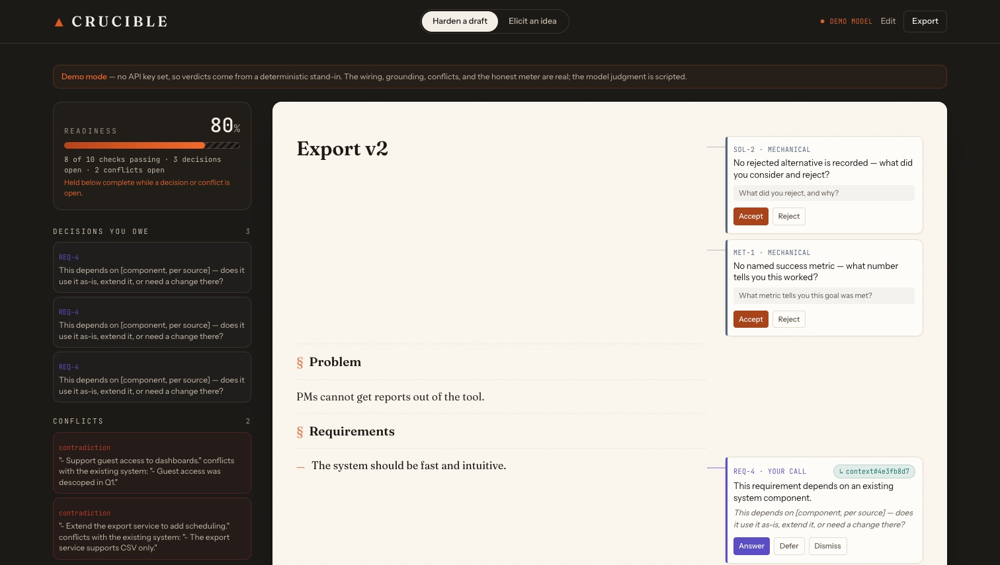
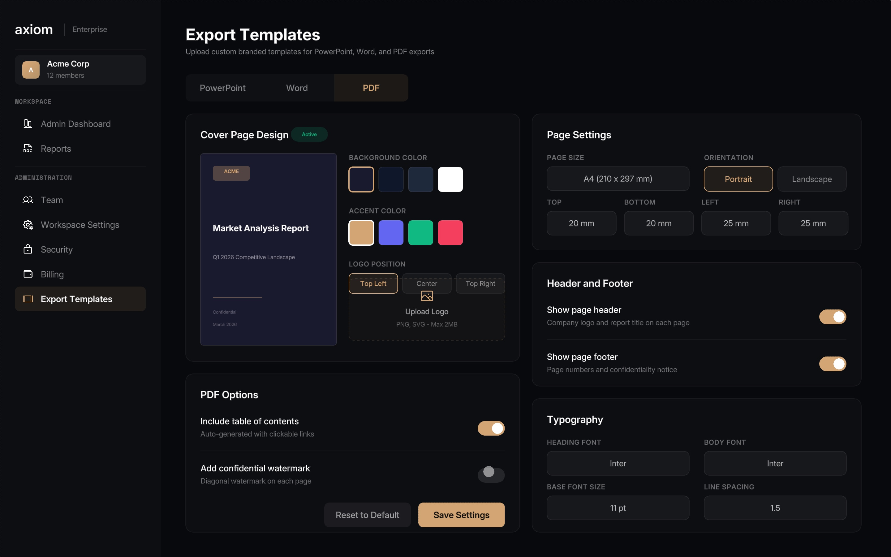
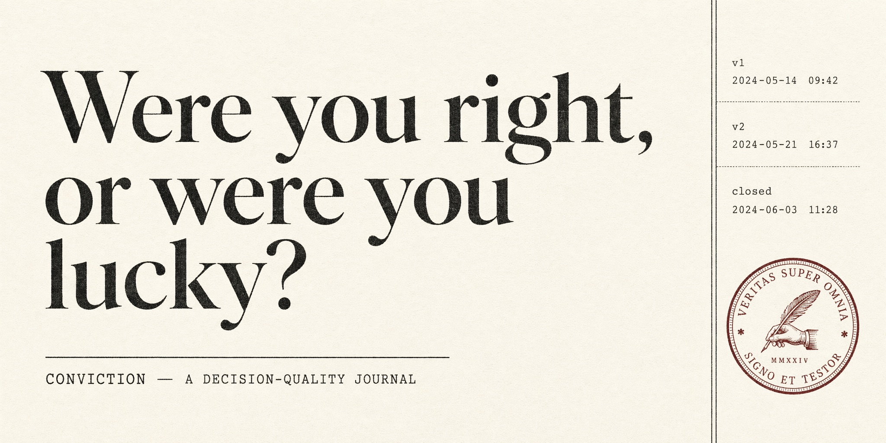

Live demo
Preparing for commercial launch
The problem: contractor discovery and procurement depend on fragmented records, unverified claims, and bid processes that are difficult to compare. I built a bilingual product for a founder that brings discovery, verified profiles, project posting, comparable bids, awards, milestones, purchase orders, invoices, and audit records into one workflow.
126product screens
452registered states
904English and Arabic browser cases
EN + ARfull RTL support
Current boundary: the product and bilingual state coverage are working. External verification, messaging, and payment services remain behind replaceable adapters for production integration.
Partner backed product
LaserEyedBen
Production system
Paused after operation
An autonomous crypto intelligence agent that combined market, on-chain, developer, news, and social signals. I designed the multi-source workflow, event processing, retrieval, personality controls, fallbacks, rate limits, and operating checks.
~16live data sources
20+intelligence engines
85%cache hit rate under 100 ms
<1.5 sfull response benchmark
Current boundary: the system ran publicly and was paused when API and infrastructure costs outgrew available funding.
Working prototype
Evaluation system
A product specification review system that finds missing acceptance criteria, conflicts, unsupported claims, hidden assumptions, and decisions that still require human judgment. The readiness score cannot show complete while a conflict or judgment item remains open.

The prototype includes a typed rubric engine, contextual grounding, lossless export, API validation, and automated tests. The visible demo uses a deterministic stand-in when no model key is present.
Repository available on request
A research system that turns a question into a structured, sourced report. It plans the work, gathers current evidence, synthesizes cited findings, and exports the result as a document, presentation, or PDF.

Built with FastAPI, React, PostgreSQL, Redis, Claude, Perplexity, live data connectors, authentication, billing, and document export services.
A decision-quality journal for thesis-driven investors. A thesis cannot save without a falsifier, versions remain immutable, reality checks flag broken assumptions, and a deterministic process score evaluates the quality of the decision rather than the return.

No recommendations, broker connections, or automated trading. The product is deliberately limited to recording, checking, and reviewing a user's own reasoning.